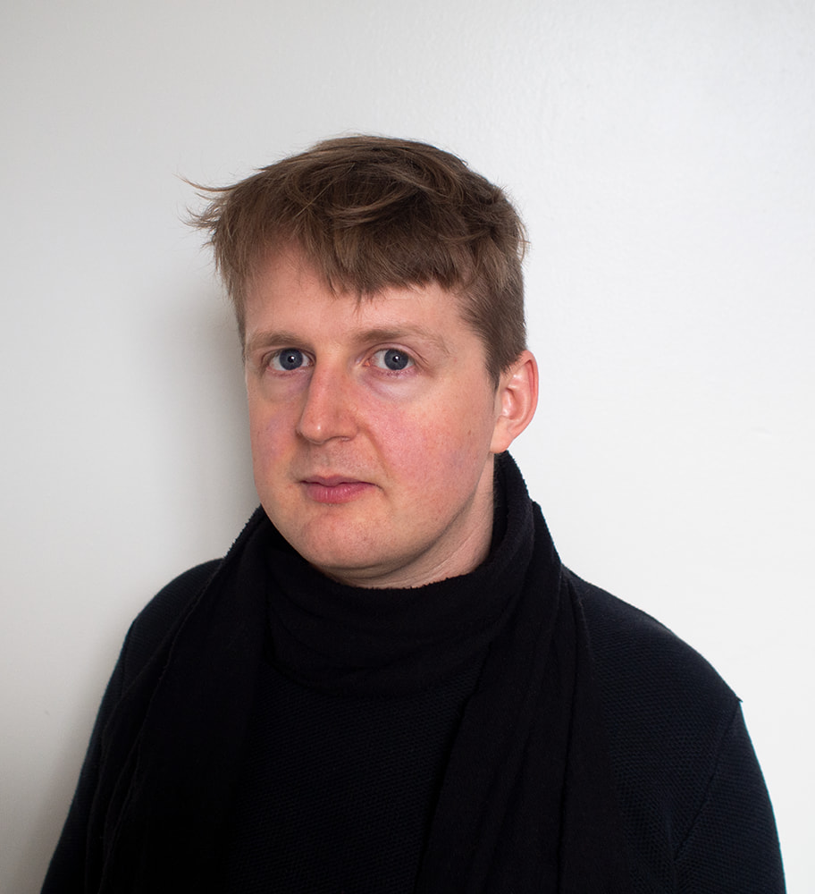

Evan Montpellier is a computer artist based in Tiohtià:ke / Mooniyang / Montréal. Primarily an instrument builder, he frequently works in collaboration with others to develop idiosyncratic aesthetic languages. His work spans live video and sound performances, music and video composition, interactive artworks, and prose editing.
His projects have been presented at venues including ISEA2020 (Montréal/online) and Luminothérapie 2021 (Montréal). He has acted as a technical consultant on artworks that have been exhibited internationally at events including Ars Electronica (Linz, Austria), Sonica (Glasgow, Scotland) and Némo International Biennial of Digital Arts (Paris, France).
Current research interests include analog and digital text art, hybrid synthetic/natural visual systems, and the esoteric history of computers.
From 2024 to 2026, Evan worked as a Technical Artist and then a Senior Technical Artist at the award-winning Felix & Paul Studios, developing large-scale location-based virtual reality experiences. Evan was a member of the Topological Media Lab from 2012 to 2022, where he built real-time media software that contributed to the creation of responsive environments. From 2020 to 2025, he was the coordinator of the Canadian chapter of ossia.io, a non-profit organization devoted to the development of free and open source software tools for creative coding. Along with Nina Bouchard, he is a co-founder of Serious Computer Group. He is also a co-founder of Ophiel along with Emily Sirota and Alex Thomas.
Evan holds a BFA in Intermedia from Concordia University and a BA in Religious Studies from McGill University.
